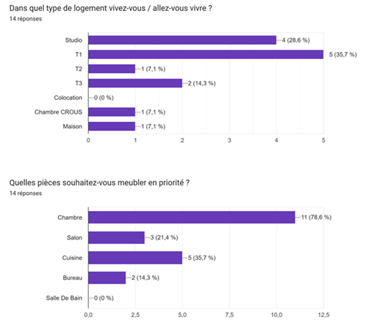
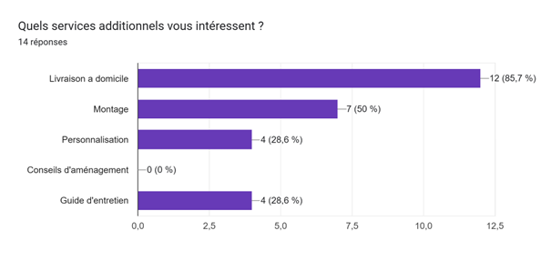

La majorité des répondants sont des étudiants âgés de 18 à 20 ans, avec un seul répondant de plus de 30 ans. Cela met en avant un public jeune, probablement en début de parcours universitaire, ce qui implique souvent un budget limité et des besoins spécifiques en termes de mobilier pour des logements temporaires ou d'étudiants.
Histoire et Records
Après avoir recueilli les réponses à notre questionnaire auprès de potentiels clients, nous avons pu procéder à l'analyse des résultats. Ces informations nous ont permis d'affiner notre projet de création d'un meuble écoresponsable, en l'adaptant au mieux aux attentes du marché.
Tout d'abord, le questionnaire a confirmé que notre cible principale se composait bien d'étudiants et de jeunes travailleurs, avec une majorité dans la tranche d'âge des 18-20 ans vivant en studio ou petit appartement. Cela conforte notre choix initial de nous concentrer sur un seul meuble, un bureau, qui est un élément essentiel pour ces profils.
En ce qui concerne la direction artistique, les réponses ont montré une nette préférence pour un style épuré, minimaliste et scandinave. Cela correspond parfaitement à notre vision initiale d'un design sobre mais élégant, mettant l'accent sur la qualité des matériaux et la fonctionnalité du produit.

Circuits Mythiques
Par ailleurs, l'importance accordée par les sondés aux aspects écologiques, tels que l'utilisation de matériaux recyclés, la production locale et la durabilité, nous a amenés à revoir certains éléments de notre tableau des besoins en amont et en aval.
Ainsi, en plus du bois recyclé et de la quincaillerie écoresponsable que nous avions initialement prévus, nous allons désormais privilégier des partenariats avec des fournisseurs locaux de matériaux bruts. Cela renforcera encore l'engagement environnemental de notre entreprise.
De même, suite aux attentes exprimées en matière de services, nous ajouterons à notre offre un guide d'entretien détaillé ainsi qu'un service de réparation et de revente des meubles, afin de prolonger leur durée de vie.
En définitive, les résultats de notre enquête client ont joué un rôle essentiel dans l'affinage de notre projet. Ils nous ont permis d'ajuster notre approche pour concevoir un meuble écoresponsable, design et fonctionnel, parfaitement adapté aux besoins et aux valeurs de notre cible de jeunes consommateurs.


Les participants habitent majoritairement dans de petits logements comme des studios, T1, et T2, ainsi que dans des chambres en résidence universitaire (CROUS). Les pièces prioritaires à meubler sont les chambres, suivies des cuisines et salons. Ces réponses montrent un besoin d’aménager des espaces essentiels, comme les chambres et espaces de cuisine ou de détente, pour optimiser des petits espaces typiques de logements étudiants.

Forest Path
A winding path through an ancient forest, covered in moss and dappled sunlight. The dense canopy above creates a magical atmosphere as rays of light filter through the leaves.

Ocean View
Waves crash against the rocky coastline as seabirds soar overhead. The endless expanse of blue water stretches to the horizon, meeting the sky in a seamless blend of colors.
City Lights
The city comes alive at night with thousands of twinkling lights. Modern skyscrapers reach toward the stars, their windows glowing like constellations in the urban landscape.

Alpine Meadow
A peaceful alpine meadow filled with wildflowers of every color. The gentle breeze carries the sweet scent of summer blooms as butterflies dance from petal to petal.

Alpine Meadow
A peaceful alpine meadow filled with wildflowers of every color. The gentle breeze carries the sweet scent of summer blooms as butterflies dance from petal to petal.

Alpine Meadow
A peaceful alpine meadow filled with wildflowers of every color. The gentle breeze carries the sweet scent of summer blooms as butterflies dance from petal to petal.

Alpine Meadow
A peaceful alpine meadow filled with wildflowers of every color. The gentle breeze carries the sweet scent of summer blooms as butterflies dance from petal to petal.
Conclusion
En conclusion, ce projet de conception de meuble écoresponsable nous a permis de mettre en pratique une démarche complète, depuis la recherche des besoins du marché jusqu’à l’élaboration d’un meuble adapté aux attentes de notre public cible. En choisissant de créer un bureau unique, nous avons pu concentrer nos efforts pour concevoir un produit à la fois fonctionnel, esthétique et respectueux de l’environnement.
Les retours obtenus grâce au sondage ont été essentiels pour affiner notre approche et renforcer la dimension locale et durable de notre meuble. Ces ajustements, que ce soit dans les choix des matériaux, les options de personnalisation ou les services complémentaires, démontrent notre engagement à répondre aux besoins réels de nos futurs clients.
Au-delà du produit final, ce projet nous a aussi permis d’adopter une vision responsable et d’expérimenter un processus créatif qui prend en compte les valeurs écologiques et la durabilité. Nous sommes fiers du chemin parcouru et convaincus que ce bureau représente bien plus qu’un simple meuble : il est le reflet d’une consommation plus consciente et d’un engagement envers un avenir durable.